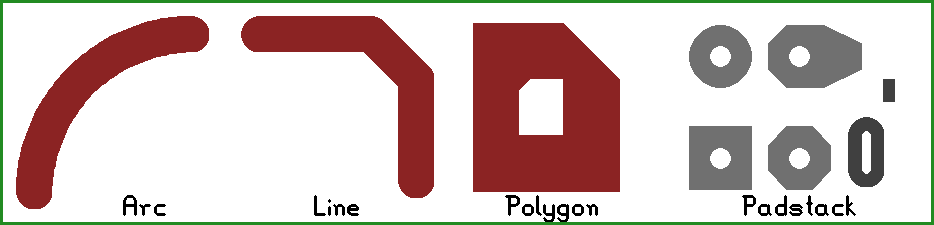

Pcb-rnd is designed to handle geometric data of a PCB. This section describes how pcb-rnd represents reality (e.g. copper shapes) in memory.
Each design pcb-rnd handles is a board. The has global properties and hosts layers. Most drawing primitives (objects) are on layers. This section describes the most important global properties.
Board size is given as a width and a height. For rectangular boards this can be the real board size, but more commonly it is used to simply determine the on-screen drawing area and the final board dimensions are specified using the outline layer. If the board is not rectagnular, the contour must be specified on the outline layer and the board size must be large enough that the outline fits in it.
Netlist is the list of logical connections to be realized in copper. A netlist is a list of named nets. Each net consists of a list of terminals (pins or pads) to connect. A terminal is given as elementname-pinname, e.g. U4-7 means "pin number 7 in element called U4".
Font, which is always embedded in the design file to guarantee that the file can be ported and will look the same on different hosts.
Misc editor settings, such as grid size and offset.
Unlike a physical layer, a pcb-rnd layer has no thickness. It is a 2 dimensional, logical canvas, similar to layers in image manipulation software like gimp. There are explicit and virtual layers. An explicit layer contains drawing primitives (objects) placed by the user. The user has full control over an explicit layer: objects can be added or removed or changed any time. A virtual layer has no such flexibility: pcb-rnd computes its content from explicit layers and there's no way to change the result directly. A layer has a type and a location.
Layer types are:
Note: pcb-rnd does not model substrate layers.
Layer locations are:
Not all combination of type and location are supported, for example an internal silk layer does not make much sense. The table below lists whether a combination is supported or not.
| top | bottom | intern | global | |
|---|---|---|---|---|
| copper | yes | yes | yes | no |
| silk | yes | yes | no | no |
| outline | no | no | no | yes |
| mask | yes | yes | no | no |
| paste | yes | yes | no | no |
One or more explicit layers form a layer group. All pcb-rnd layers of a layer group will end up on the same physical layer. The visibility of layers in a layer group are toggled together. The main use of layer groups is to exploit that layers have different drawing color on screen: there can be a signal and a gnd layers with different color in the same layer group, on the same physical layer.
Pcb-rnd supports a small number of basic drawing objects, from which complex objects can be build. The following figure demonstrates all basic objects:

Lines are round ended straight line segments with a width and a clearance. The above image shows 3 lines connected. Lines are mainly used to construct traces. A line is always on a specific layer. The user interface allows drawing lines aligned to 90 or 45 degree axes or lines with random angle.
A line is specified by its two endpoints, width and clearance:
A clearance is the gap between a line and the sorrunding polygon in the same layer group. The gap is made only if the sorrunding polygon has the "clearpoly" flag set and the line has the "clearline" flag set. If either of these flags is not set, no gap is made - or in pcb-rnd terminology, the line is joined to the polygon.
Arcs are round ended circular arcs with trace width and clearance. They behave like lines in all respects.
Although the arc is described with it's center, radius, start and end angles, the user interface may offer drawing arcs by endpoints.
Polygons are solid, filled copper areas with optional holes in them. Polygon contour consits of lines - when they look curvy, it's really high resolution line approximation. There are two type of holes in a polygon: explicit, user drawn holes and clerance cutouts. User drawn holes are "negative" polygons drawn manually. To keep polygons simple, if an user drawn hole touches the contour of a polygon, the hole is removed and the contour is modified; if two holes touch, they are merged into one hole.
If the polygon has the "clearpoly" flag set (default), clearance cutouts are automatically inserted around objects on the same layer group:
Overlapping or touching polygons are not automatically merged. An object with the "clearline" flag set will clear all "clearpolys" it is over - if there are multiple such polygons overlapping under the objects (on the same layer group), all such polygons get the clearance cutout.
If a polgyon is cut into multiple islands, the behaviour depends on the "fullpoly" flag of the polygon. If it is not set (default), only the largest island is kept, else all islands are kept. In the "fullpoly" mode islands will have no galvanic connection (unless the user adds vias and connect them on another layer), still the program will handle all islands as a single polygon. This is risky: the program will indicate connection between polygon islands that are not really connected, only because they are part of the same polygon!
| phyisical board term | pcb-rnd term |
|---|---|
| layer | layer group |
| copper layer | layer group with copper layers |
| substrate | N/A |
| contour of the board | outline layer |
| outline routing path | outline layer |
| polygon pour | polygon |
| plane | polygon |